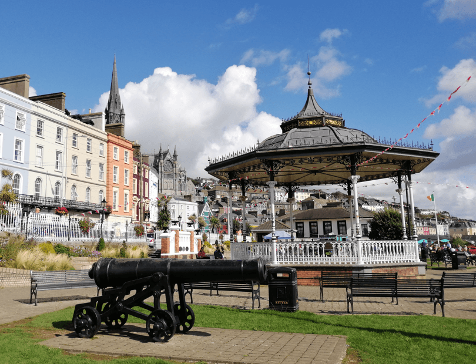
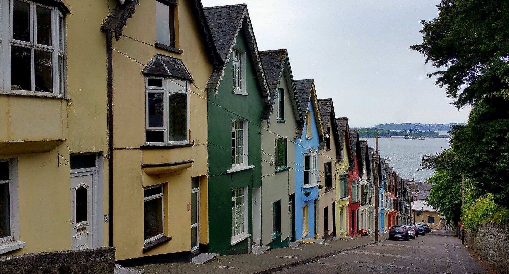
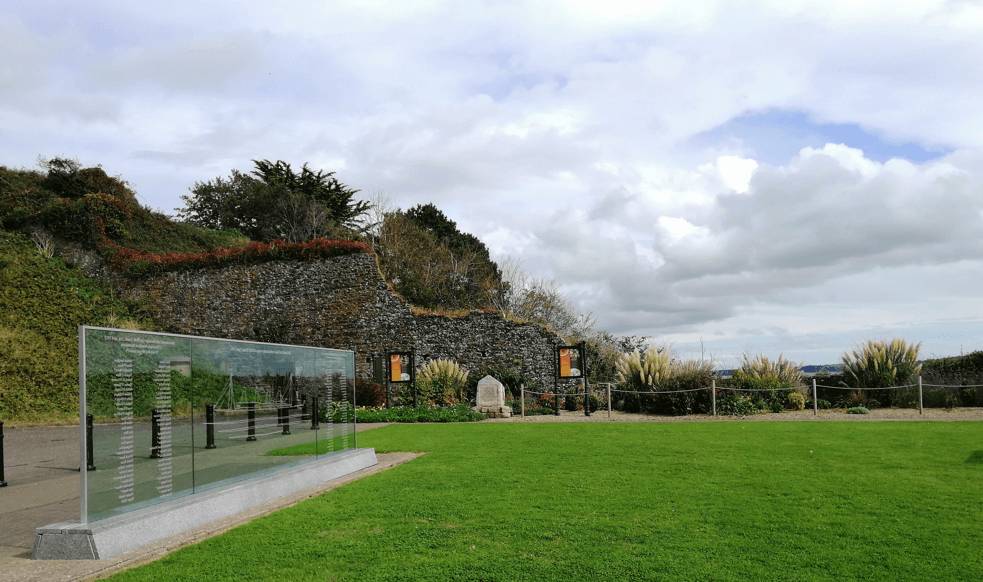

From the Train Station to the Promenade
This is a very quick stroll. If you get in Cobh by train, the promenade is a good
starting point for your journey. From the promenade, you can go everywhere in Cobh and you can
always come back there for a coffee or just rest and enjoy the view over the Cork Harbour.

From the Promenade to the Cathedral
Walking up the steep streets of Cobh, you can get a little tired, but the way
will never be too long.
When you arrive the cathedral you will find it is worth it. The view over the Cork Harbour is
amazing. You need to go there and check this out.
It would not be the same if we showed you a picture here.

From the Promenade to the Titanic Memorial Garden
Walk east and in a few minutes you will get there. It is a nice and easy walk.
Enjoy your journey and the landscape.
